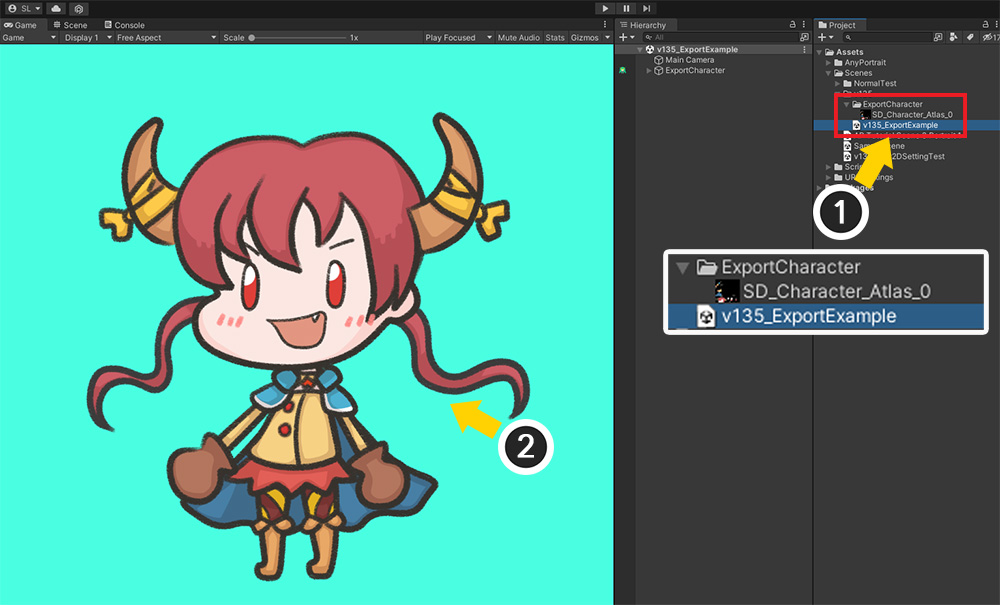
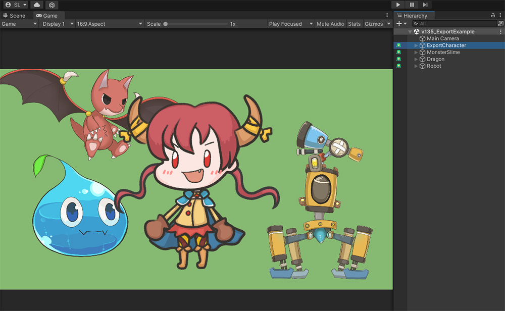
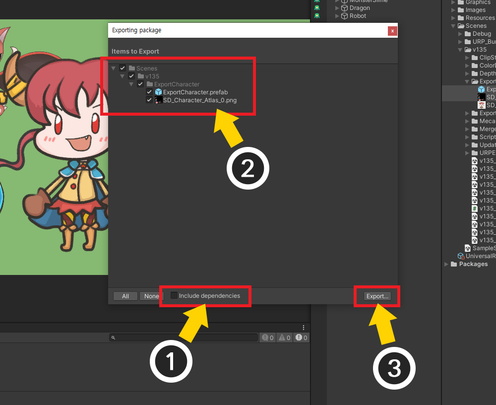
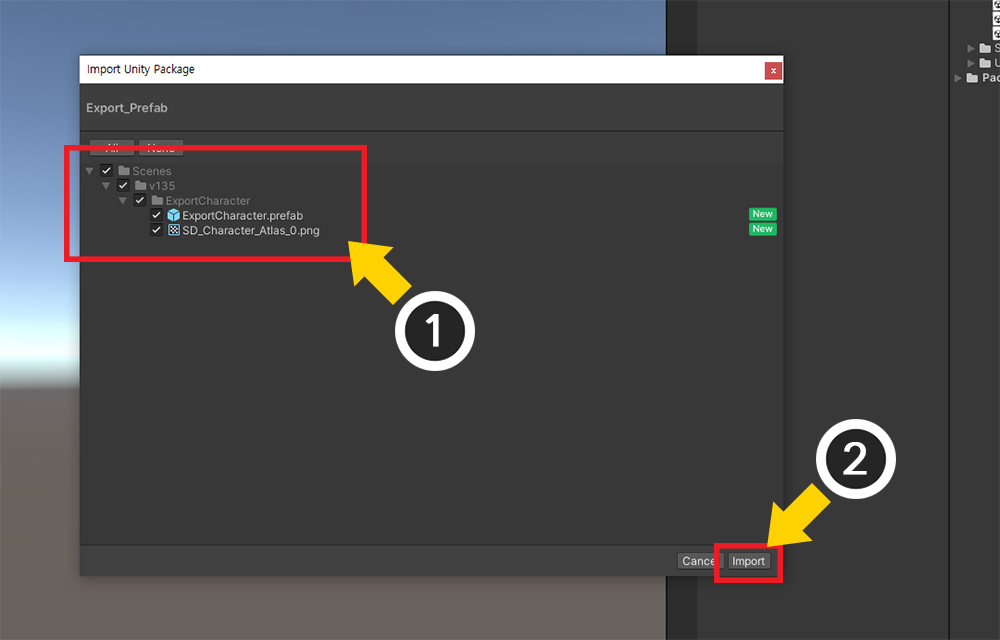
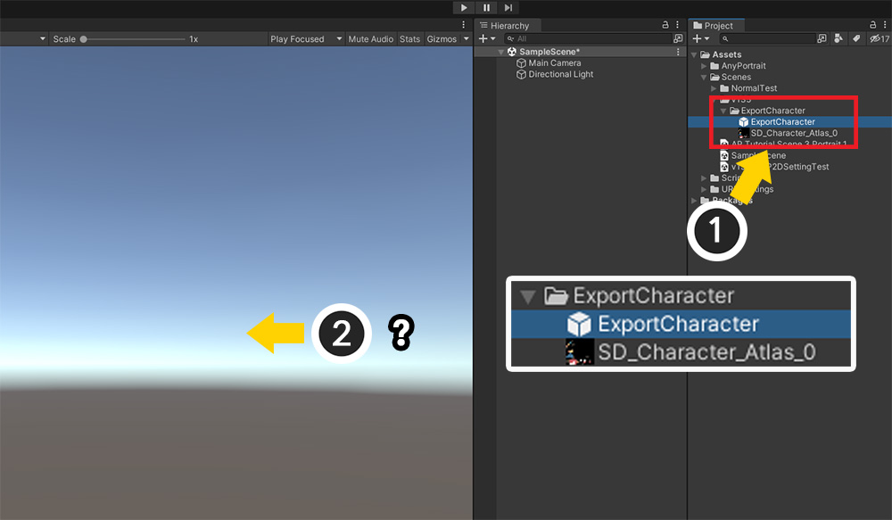
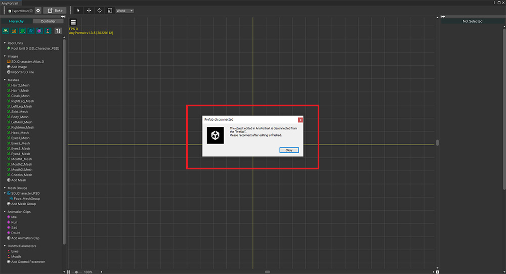
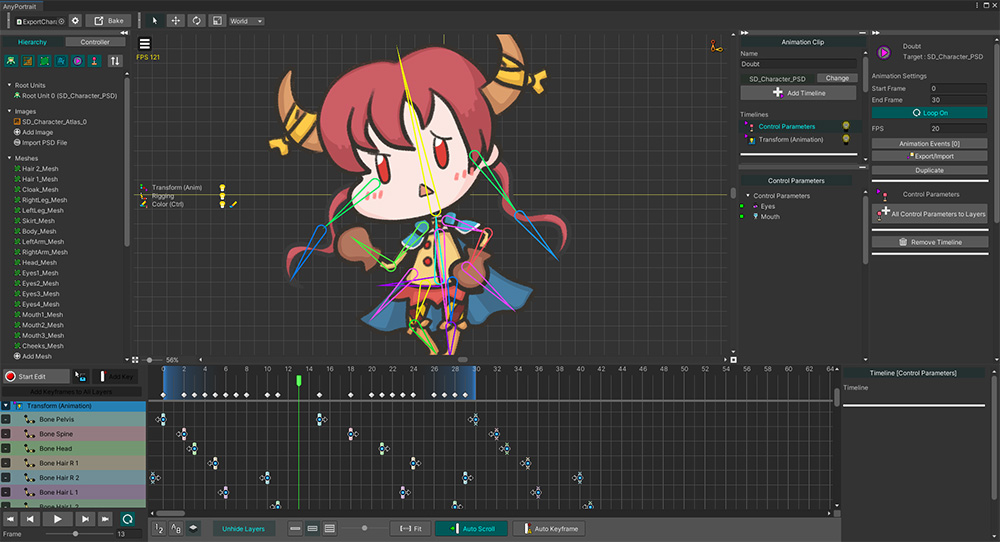

AnyPortrait > 메뉴얼 > 다른 프로젝트로 내보내기
다른 프로젝트로 내보내기
1.0.0
여러분이 유니티에서 작업한 결과물을 다른 프로젝트로 복사하고자 하는 경우가 종종 있습니다.
유니티의 업데이트된 버전을 테스트해보고 싶거나, 다른 프로젝트와 리소스를 공유하는 등 다양한 이유들이 있을 것입니다.
하지만 유니티의 에셋 파일을 그대로 복사할 경우 데이터 연결이 해제되어 제대로 동작하지 못할 수 있습니다.
또한 AnyPortrait와 같이, 유니티 씬(Scene)에 데이터가 저장되는 에셋들은 별도의 파일이 존재하지 않기에 복사하기가 난감합니다.
이 페이지에서는 AnyPortrait의 캐릭터를 다른 프로젝트로 복사하는 두가지 방법을 소개합니다.
이 방법은 AnyPortrait 뿐만 아니라 대부분의 유니티 에셋이나 플러그인에도 사용될 수 있는 방법입니다.
또한 버그나 어려움을 해결하기 위해 작업물을 저희 팀에게 보내실 때도 이 페이지에서 소개하는 방법이 유용할 것입니다.
AnyPortrait의 백업 기능(관련 페이지)을 이용하여 다른 프로젝트로 내보내는 것이 가능합니다.
하지만 백업 기능은 복구의 목적을 가진 기능이므로, 일부 다른 컴포넌트 등과 관련된 설정들은 복사되지 않습니다.
따라서 가능하면 이 페이지에서 소개하는 방법을 활용해보시길 바랍니다.
씬을 내보내기

AnyPortrait로 제작된 캐릭터는 유니티의 씬에 저장됩니다.
기본적으로는 캐릭터는 별도의 파일로 존재하지 않기 때문에, 씬 파일(.scene)을 복사하는 것이 일반적입니다.
준비된 씬은 위와 같이 구성되어 있습니다.

내보내고자 하는 캐릭터는 몇개의 애니메이션을 가지고 있습니다.
이 캐릭터를 다른 프로젝트로 복사해봅시다.

(1) 캐릭터에서 사용 중인 텍스쳐 에셋를 선택합니다.
(2) Ctrl키를 누른 상태로 내보낼 유니티 씬을 선택합니다.
(3) 내보낼 대상이 모두 선택된 상태에서 Project UI에서 우클릭을 합니다.
(4) Export Package 메뉴를 클릭합니다.
안내
만약 캐릭터가 메카님 및 애니메이션 클립 등과 같은 다른 에셋들과 연동되어 동작한다면, 그 에셋들도 같이 선택해주세요.

Exporting package 다이얼로그가 나타납니다.
(1) Include dependencies 옵션을 비활성화 합니다. (이 옵션이 켜지면 선택된 객체들과 관련된 모든 스크립트들이 저장되버립니다.)
(2) 선택된 객체들이 리스트에 보입니다.
(3) Export 버튼을 눌러서 적절한 위치에 유니티 패키지 파일(.unitypackage)을 저장합니다.

만약 캐릭터의 텍스쳐 에셋을 찾기가 어렵다면,
(1) AnyPortrait 에디터에서 이미지를 선택합니다.
(2) 이미지에서 사용중인 텍스쳐 에셋 항목을 클릭하세요.
유니티 에디터에서 해당 텍스쳐 에셋이 하이라이트되면서 찾기가 쉬워집니다.
저장된 씬 파일 가져오기

저장된 캐릭터와 씬 파일을 새로운 프로젝트에 가져와봅시다.
(새로운 프로젝트에는 동일한 버전의 AnyPortrait가 설치되어 있어야 합니다.)
(1) 저장된 유니티 패키지 파일을 더블 클릭하거나 (2) 프로젝트로 드래그합니다.

패키지 파일을 가져오기 위한 다이얼로그가 열립니다.
(1) 패키지에 씬과 이미지가 저장되어 있습니다. 모두 선택하세요.
(2) Import 버튼을 누릅니다.

(1) 씬과 이미지가 현재의 프로젝트에 복사됩니다.
(2) 가져온 씬을 선택하면 캐릭터가 정상적으로 복사되었음을 볼 수 있습니다.

AnyPortrait 에디터로 열어보면 데이터가 손상되지 않아서 계속해서 편집하고 이용할 수 있습니다.
프리팹을 내보내고 가져오기

위와 같이 복사할 캐릭터 뿐만 아니라 다른 객체들이 씬에 많이 배치된 경우에는, 씬을 통째로 내보내기가 어렵습니다.
물론 동일한 프로젝트에서 새로운 빈 씬을 만든 후, 거기에 캐릭터를 복사( Ctrl+C, V )한 후, 해당 씬을 내보낼 수도 있습니다.
하지만 이 경우엔, 프리팹(Prefab)을 이용해보는 것도 좋습니다.

(1) 복사하고자 하는 캐릭터를 Hierarchy UI에서 선택합니다.
(2) 캐릭터를 Project UI로 드래그하여 프리팹(Prefab)으로 변환합니다.
캐릭터를 프리팹으로 만들었다면, 이제 이 캐릭터는 독립된 파일로 존재합니다.
간단하게도 이 프리팹 파일을 다른 프로젝트에 그대로 복사하면 끝입니다.
실제로 AnyPortrait의 내부 데이터는 손상 없이 복사됩니다.
하지만 프리팹만 복사해버리면, 텍스쳐와 같은 다른 에셋들과의 연결이 끊어지므로 적절하지 못합니다.
따라서 여기서도 유니티 패키지를 이용할 것입니다.

내보내는 과정은 거의 동일합니다.
(1) 캐릭터 프리팹과 (2) 텍스쳐 에셋을 함께 선택합니다.
(같이 내보낼 다른 에셋들도 이때 같이 선택해주세요.)
(3) 우클릭 메뉴에서 Export Package를 선택합니다.

(1) Include dependencies를 해제합니다.
(2) 프리팹과 텍스쳐 에셋이 리스트에 나타납니다.
(3) Export 버튼을 눌러서 유니티 패키지 파일을 저장합니다.

새로운 프로젝트를 엽니다. 마찬가지로 동일한 버전의 AnyPortrait가 설치되어 있어야 합니다.
(1) 저장된 유니티 패키지 파일을 더블 클릭하거나 (2) 프로젝트로 드래그합니다.

(1) 현재의 프로젝트로 가져올 프리팹과 텍스쳐 에셋이 리스트에 나타납니다.
(2) Import 버튼을 누릅니다.

(1) 캐릭터 프리팹과 텍스쳐 에셋이 정상적으로 복사되었습니다.
(2) 그런데 이번엔 씬을 복사한 것이 아니므로, 아직 캐릭터를 볼 수 없습니다.

(1) 프리팹을 드래그하여 씬에 배치합니다.
(2) 캐릭터를 씬뷰에서 확인할 수 있습니다.
만약 캐릭터가 보이지 않는다면, 캐릭터를 선택하고 Inspector에서 Refresh Meshes 버튼을 누르면 됩니다.

여기서 문제는, AnyPortrait는 프리팹 상태에서의 편집을 허용하지 않는다는 것입니다.
캐릭터를 편집하기 위해 AnyPortrait 에디터를 열면 위와 같은 메시지가 나타납니다.
Okay 버튼을 누릅니다.

이제 프리팹과의 연결이 해제되어 편집할 수 있는 상태가 됩니다.
프리팹을 이용하는 내보내기 방법에서도 캐릭터 데이터가 정상적으로 복사됨을 볼 수 있습니다.

편집을 마치고 Bake를 실행하고 유니티 씬으로 돌아옵니다.
(1) 캐릭터를 선택합니다.
(2) Inspector에 프리팹과 관련된 UI들이 추가된 것을 볼 수 있습니다.
프리팹과의 연결을 다시 유지하거나 해제하는 기능들입니다.
프리팹에 대한 자세한 내용은 관련 페이지에서 보실 수 있습니다.